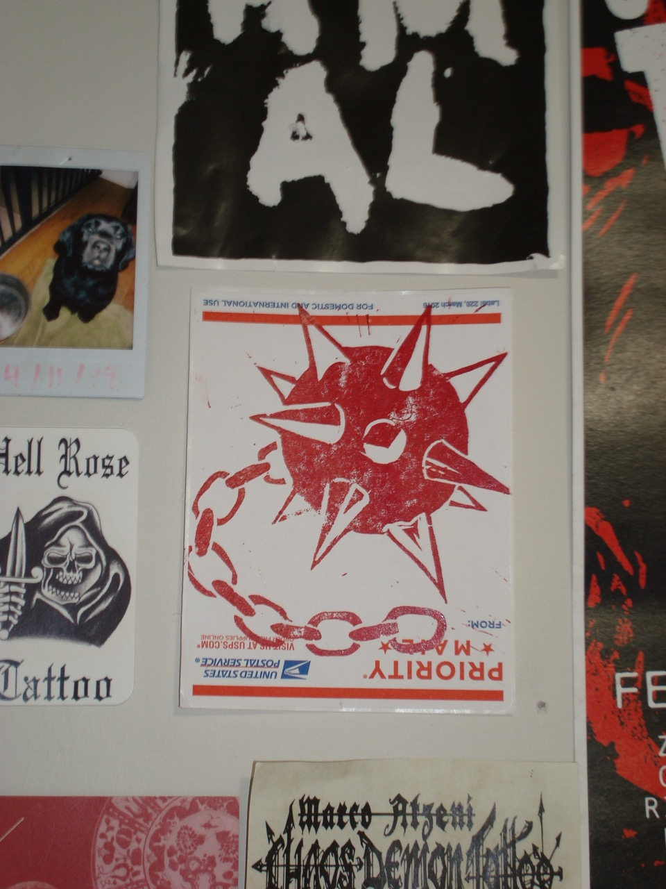
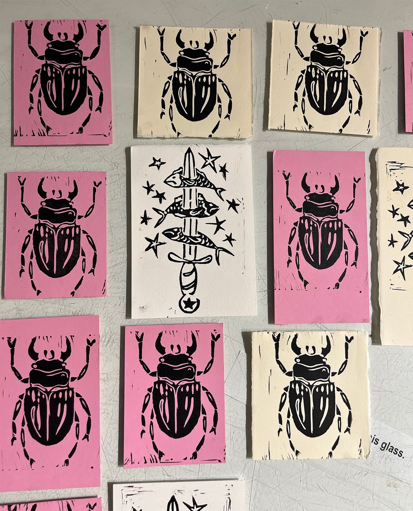
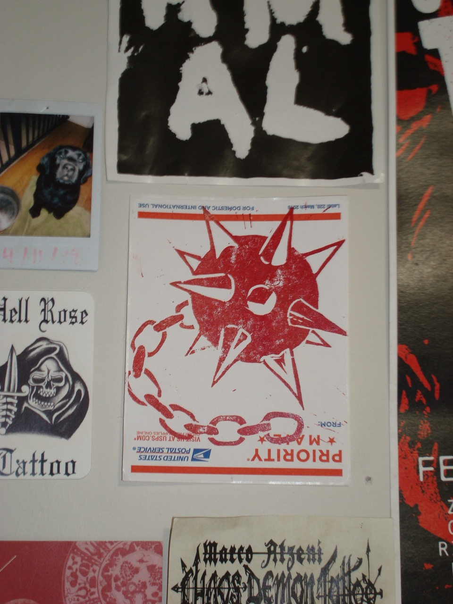
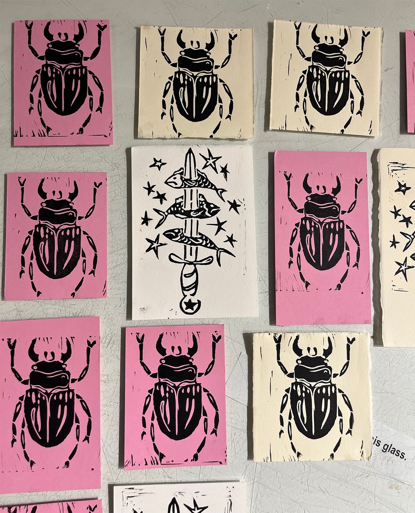
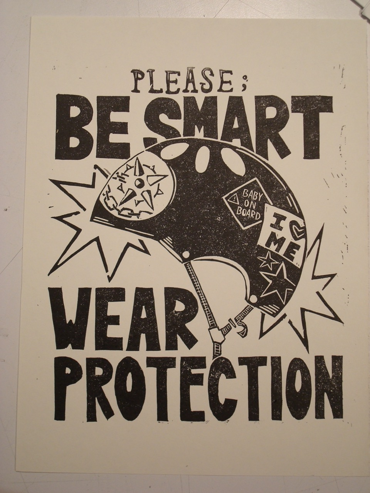
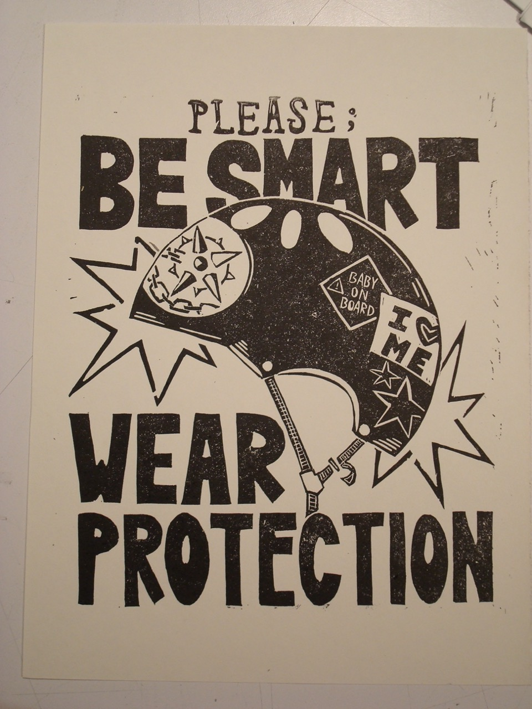

blood, sweat, and tears!! i am so serious, printmaking is a labor of love for me. i find it completely enthralling, reduction printmaking is my sweet sweet angel, i will spend a full eight hour day carving when i can. letterpress is also a passion of mine, i love physical type! it takes some mental fortitude but is so rewarding because it really creates a look that can't be acheived any other way, unique and beautiful.


 




 
